wmtask_direct_sum_additive_p30_perareafnnautodim_nearid_tf__lc_x_obsnoisescale_sweep_20260429T234503Z__stage_aProject: WMTask_identity_encoder_verification
Launched: 2026-04-29T23:45:35Z
Completed: 2026-04-30T02:45:27Z
Outcome: complete_clean
Git: latent-JacobianODE @ 4cd9047
Expected runs: 21
wmtask_direct_sum_additive_p30_perareafnnautodim_nearid_tf__lc_x_obsnoisescale_sweepDescription
WMTask fully-observed (N1=N2=64), latent JacobianODE with DirectSumCouplingEncoder, FNN-based per-area autodim (n_target_dim_method='fnn', threshold=0.01). Each area independently picks its own n_target_dims via Kennel false-nearest-neighbor on its own input dims; remaining dims become a per-area null subspace. Additive coupling, 8 layers, hidden_dim=128. near_identity_std=1e-3, final_perm_identity=true. 21-cell sweep over 7 LC x 3 obs_noise_scale. Split-mode loss. TF-coupled LR schedule. Two-stage protocol with dual-checkpoint (primary ES patience=5, shadow patience=2).
Hypothesis
Companion to the full-128 DirectSum sweep with the same TF-coupled LR + near-id init recipe. The per-area null subspace gives loop closure something structural to clamp (vs full-128 where z_dyn is the entire latent and null is empty), and the FNN dim estimator should pick a smaller per-area n_target_dims than the PCA-99% baseline (FNN finds the minimum embedding dim for stable reconstruction; PCA finds dims to explain a variance fraction). If the smaller dim helps dynamics learning AND the null subspace + LC pressure is doing useful regularization, this should match or beat full-128 on val traj_loss while preserving cross-area Gramian asymmetry.
Success criteria
Swept axes (3): data.postprocessing.generalized_variance, training.lightning.loop_closure_weight, training.lightning.obs_noise_scale
Chosen run (by best_traj_loss): 6ody0pke — traj_loss=0.05236, MASE=1.6197, R²=0.9403, LC loss=116.099, epoch=19.0
Swept-axis values at chosen run: data.postprocessing.generalized_variance=0.00954705 · training.lightning.loop_closure_weight=0 · training.lightning.obs_noise_scale=0
Runs analyzed: 21 (expected 21)
| run_idx | run_id | data.postprocessing.generalized_variance |
training.lightning.loop_closure_weight |
training.lightning.obs_noise_scale |
best_traj_loss | best_MASE | R² | LC loss | epoch |
|---|---|---|---|---|---|---|---|---|---|
| 0 | 6ody0pke |
0.00954705 | 0 | 0 | 0.05236 | 1.6197 | 0.9403 | 116.099 | 19.0 |
| 3 | fb450tgn |
0.00954705 | 1.0e-06 | 0 | 0.05239 | 1.6203 | 0.9403 | 60.625 | 19.0 |
| 6 | rymgu7dv |
0.00954705 | 1.0e-05 | 0 | 0.05250 | 1.6234 | 0.9402 | 19.299 | 19.0 |
| 9 | ztddtzy3 |
0.00954705 | 1.0e-04 | 0 | 0.05314 | 1.6442 | 0.9394 | 3.250 | 19.0 |
| 12 | 7rxzb4gp |
0.00954705 | 0.001 | 0 | 0.05577 | 1.7148 | 0.9364 | 0.370 | 19.0 |
| 2 | mmqi388l |
0.00954705 | 0 | 0.05 | 0.05619 | 1.7229 | 0.9359 | 255.207 | 19.0 |
| 4 | xsw6tlq2 |
0.00954705 | 1.0e-06 | 0.01 | 0.05622 | 1.7239 | 0.9359 | 105.570 | 19.0 |
| 1 | 1acdz8t9 |
0.00954705 | 0 | 0.01 | 0.05622 | 1.7239 | 0.9359 | 223.126 | 19.0 |
| 7 | 04ymbtvo |
0.00954705 | 1.0e-05 | 0.01 | 0.05623 | 1.7262 | 0.9359 | 29.366 | 19.0 |
| 5 | dts0eqm5 |
0.00954705 | 1.0e-06 | 0.05 | 0.05631 | 1.7263 | 0.9358 | 115.540 | 19.0 |
| 8 | aahsi3yr |
0.00954705 | 1.0e-05 | 0.05 | 0.05639 | 1.7303 | 0.9357 | 32.243 | 19.0 |
| 10 | cdw8o5zp |
0.00954705 | 1.0e-04 | 0.01 | 0.05757 | 1.7648 | 0.9343 | 4.410 | 19.0 |
| 11 | zk93z7va |
0.00954705 | 1.0e-04 | 0.05 | 0.05809 | 1.7799 | 0.9337 | 5.054 | 19.0 |
| 15 | jxwgptq2 |
0.00954705 | 0.01 | 0 | 0.06218 | 1.8630 | 0.9290 | 0.033 | 19.0 |
| 18 | 39rsmmt9 |
0.00954705 | 0.1 | 0 | 0.07155 | 2.0569 | 0.9182 | 0.001 | 19.0 |
| 13 | qbrdatjw |
0.00954705 | 0.001 | 0.01 | 0.26165 | 4.4553 | 0.7004 | 8.112 | 17.0 |
| 14 | ibojdg8u |
0.00954705 | 0.001 | 0.05 | 0.29249 | 4.8146 | 0.6642 | 0.533 | 1.0 |
| 20 | f5ezymij |
0.00954705 | 0.1 | 0.05 | 0.37609 | 5.2151 | 0.5683 | 0.075 | 2.0 |
| 19 | nbbg17ga |
0.00954705 | 0.1 | 0.01 | 0.38409 | 5.2708 | 0.5594 | 0.013 | 2.0 |
| 17 | q42cr885 |
0.00954705 | 0.01 | 0.05 | 0.56352 | 6.1851 | 0.3571 | 0.271 | 1.0 |
| 16 | be4ouakp |
0.00954705 | 0.01 | 0.01 | 0.80143 | 6.8876 | 0.0804 | 0.033 | — |
obs_noise_scale| obs_noise_scale | Best LC weight | Best traj loss | MASE at best | R² | LC loss | epoch |
|---|---|---|---|---|---|---|
| 0.0 | 0.0e+00 | 0.05236 | 1.6197 | 0.9403 | 116.099 | 19.0 |
| 0.01 | 1.0e-06 | 0.05622 | 1.7239 | 0.9359 | 105.570 | 19.0 |
| 0.05 | 0.0e+00 | 0.05619 | 1.7229 | 0.9359 | 255.207 | 19.0 |
| Criterion | Verdict | Note |
|---|---|---|
| All 21 cells train without divergence | Unknown | |
| FNN auto-dim per area logged (n_target_dims_per_block_fnn_auto) | Unknown | |
| es2-best.ckpt and es5-best.ckpt both saved per cell | Unknown | |
| Best val traj_loss within 2x of full-128 DirectSum companion's best | Unknown | |
| Cross-area Gramian asymmetry consistent with ground truth at best cell | Unknown | |
| Loop closure loss at best cell < sqrt(n_target_dims) | Unknown |
Automated verdicts use simple numeric-threshold parsing and may mis-classify qualitative criteria. The Discussion section below takes precedence.
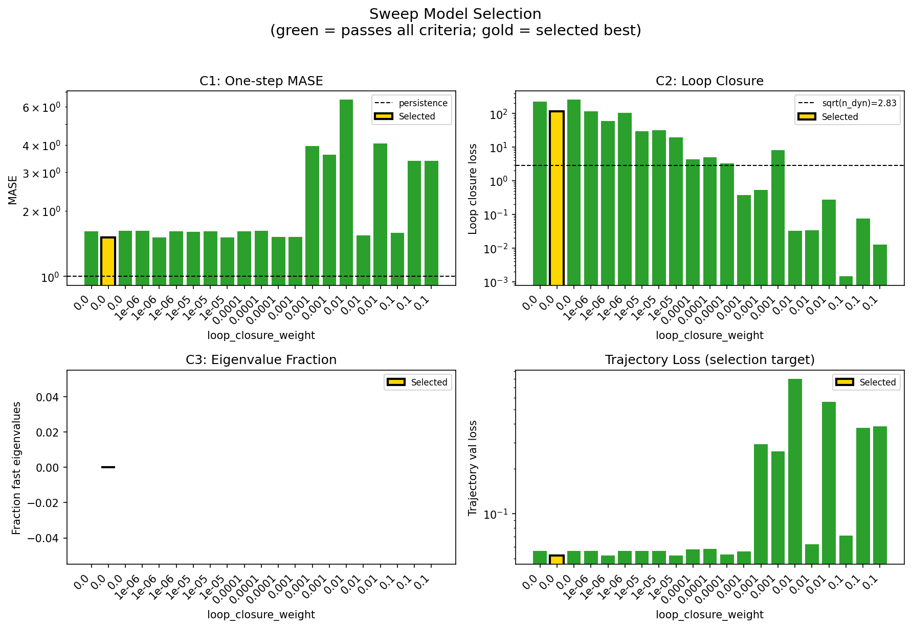
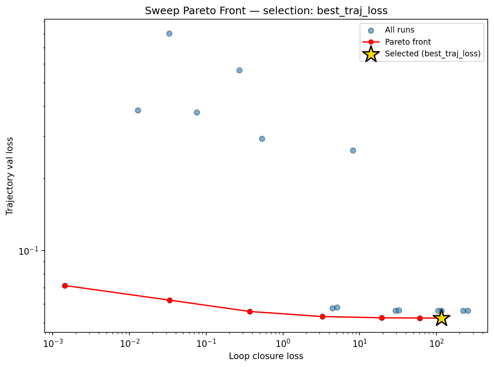
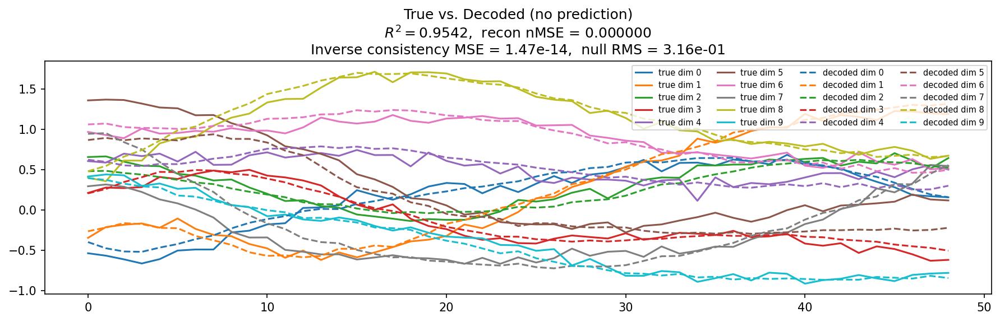
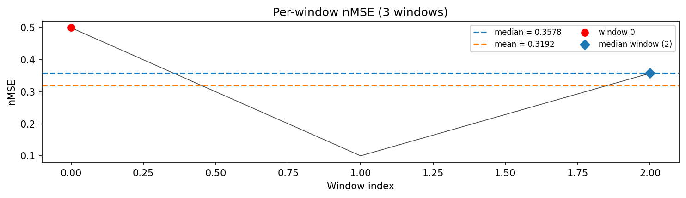
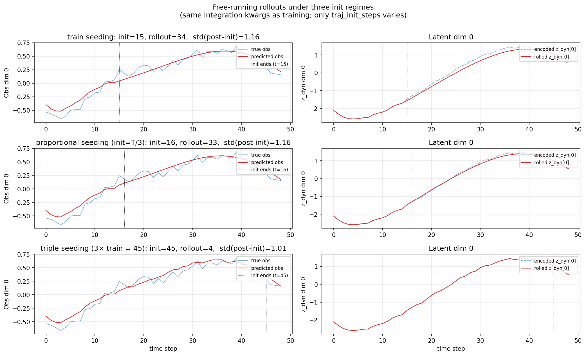
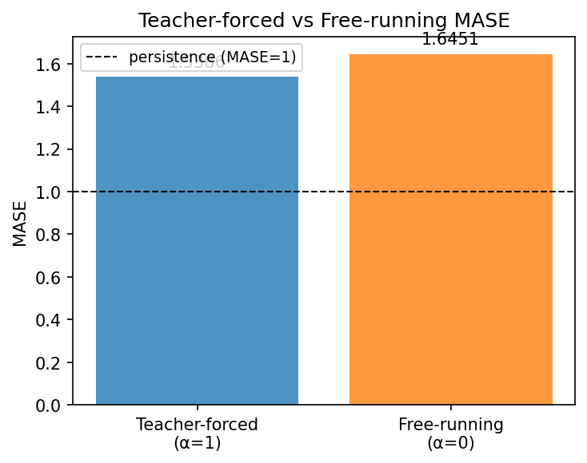
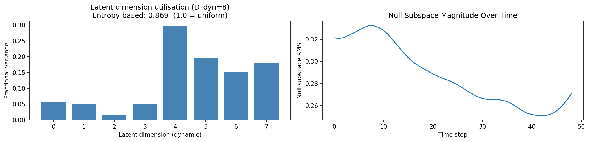
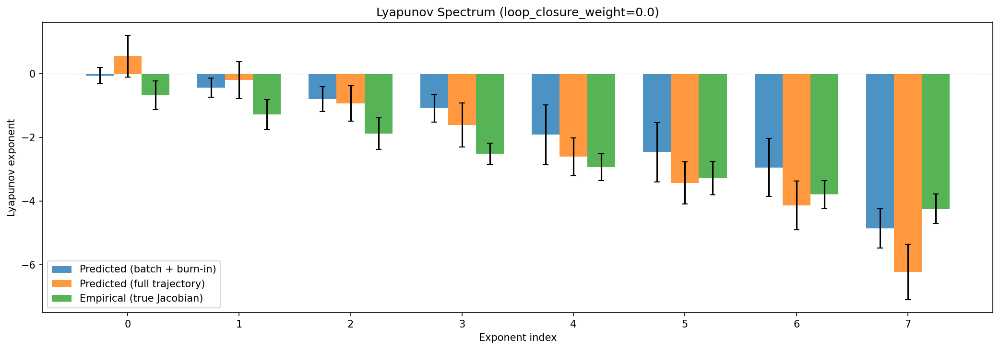
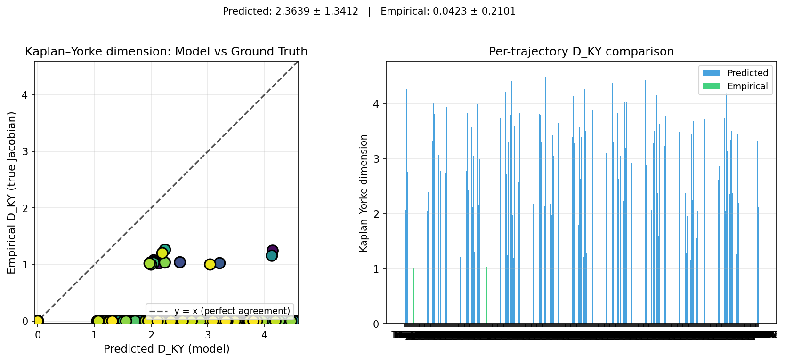
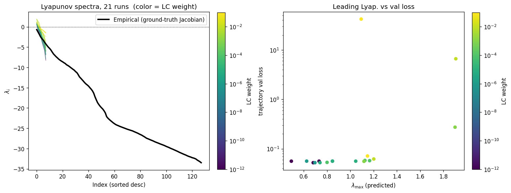
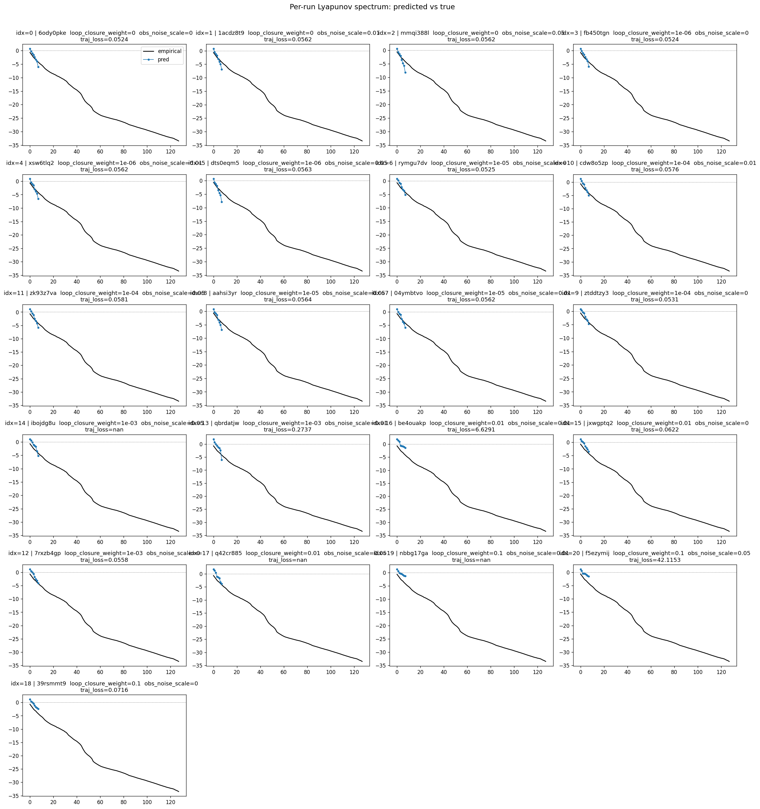
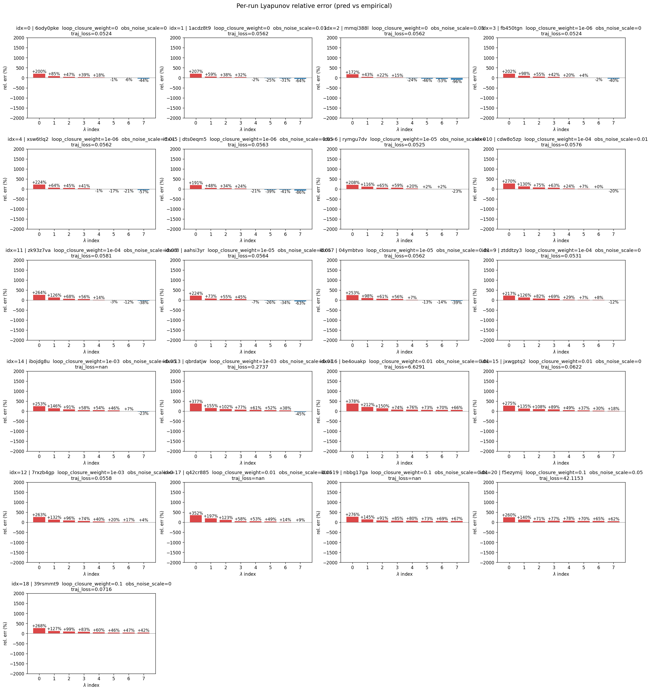
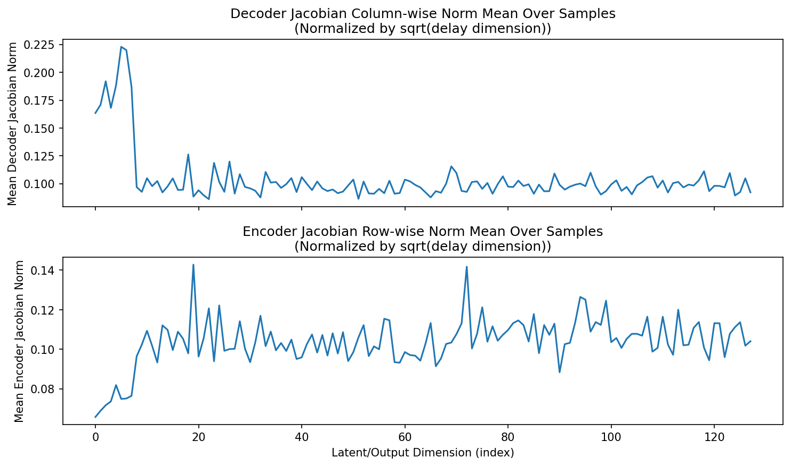
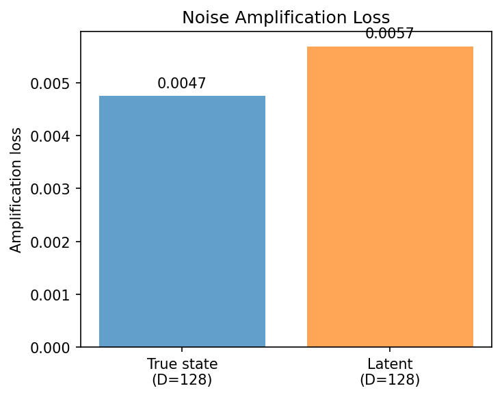
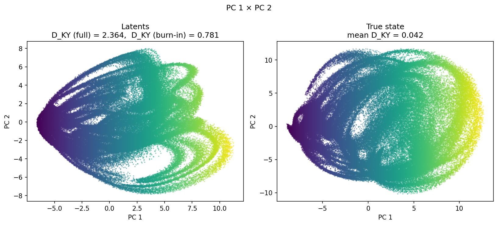
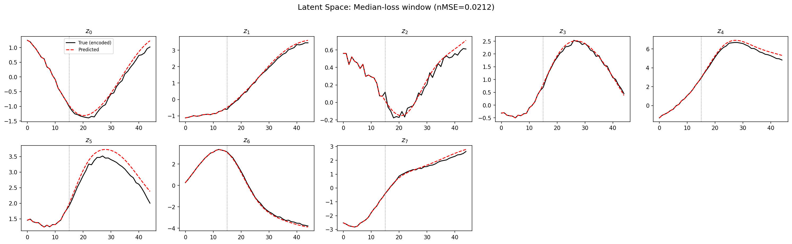
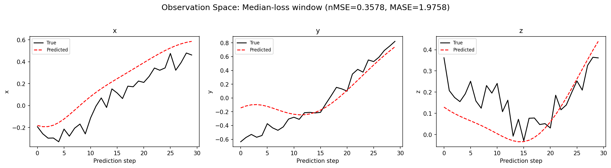
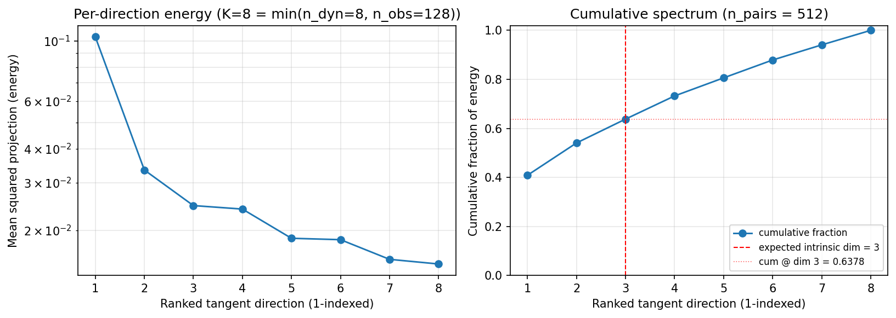
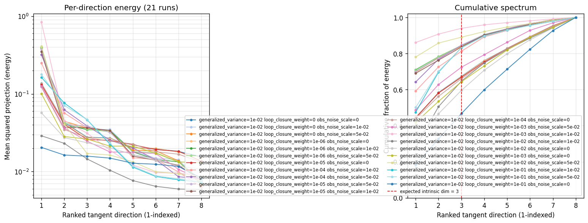
(to be written)
run_analytics stdoutrun_analyticsNo run_id provided — selecting best run from group 'wmtask_direct_sum_additive_p30_perareafnnautodim_nearid_tf__lc_x_obsnoisescale_sweep_20260429T234503Z__stage_a' ...
Found 21 total runs in JacobianODE/WMTask_identity_encoder_verification (group=wmtask_direct_sum_additive_p30_perareafnnautodim_nearid_tf__lc_x_obsnoisescale_sweep_20260429T234503Z__stage_a)
All runs (state, loop_closure_weight, tangent_entropy_weight, kl_dyn_weight):
6ody0pke: state=finished, lc=0.0, te=0.0, kl_dyn=0.0
1acdz8t9: state=finished, lc=0.0, te=0.0, kl_dyn=0.0
mmqi388l: state=finished, lc=0.0, te=0.0, kl_dyn=0.0
fb450tgn: state=finished, lc=1e-06, te=0.0, kl_dyn=0.0
xsw6tlq2: state=finished, lc=1e-06, te=0.0, kl_dyn=0.0
dts0eqm5: state=finished, lc=1e-06, te=0.0, kl_dyn=0.0
rymgu7dv: state=finished, lc=1e-05, te=0.0, kl_dyn=0.0
cdw8o5zp: state=finished, lc=0.0001, te=0.0, kl_dyn=0.0
zk93z7va: state=finished, lc=0.0001, te=0.0, kl_dyn=0.0
aahsi3yr: state=finished, lc=1e-05, te=0.0, kl_dyn=0.0
04ymbtvo: state=finished, lc=1e-05, te=0.0, kl_dyn=0.0
ztddtzy3: state=finished, lc=0.0001, te=0.0, kl_dyn=0.0
ibojdg8u: state=finished, lc=0.001, te=0.0, kl_dyn=0.0
qbrdatjw: state=finished, lc=0.001, te=0.0, kl_dyn=0.0
be4ouakp: state=finished, lc=0.01, te=0.0, kl_dyn=0.0
jxwgptq2: state=finished, lc=0.01, te=0.0, kl_dyn=0.0
7rxzb4gp: state=finished, lc=0.001, te=0.0, kl_dyn=0.0
q42cr885: state=finished, lc=0.01, te=0.0, kl_dyn=0.0
nbbg17ga: state=finished, lc=0.1, te=0.0, kl_dyn=0.0
f5ezymij: state=finished, lc=0.1, te=0.0, kl_dyn=0.0
39rsmmt9: state=finished, lc=0.1, te=0.0, kl_dyn=0.0
slurm_timeout_min not found in any run config — falling back to 180 min
Including 6ody0pke (lc=0.0): use_all_runs=True (state=finished)
Including 1acdz8t9 (lc=0.0): use_all_runs=True (state=finished)
Including mmqi388l (lc=0.0): use_all_runs=True (state=finished)
Including fb450tgn (lc=1e-06): use_all_runs=True (state=finished)
Including xsw6tlq2 (lc=1e-06): use_all_runs=True (state=finished)
Including dts0eqm5 (lc=1e-06): use_all_runs=True (state=finished)
Including rymgu7dv (lc=1e-05): use_all_runs=True (state=finished)
Including cdw8o5zp (lc=0.0001): use_all_runs=True (state=finished)
Including zk93z7va (lc=0.0001): use_all_runs=True (state=finished)
Including aahsi3yr (lc=1e-05): use_all_runs=True (state=finished)
Including 04ymbtvo (lc=1e-05): use_all_runs=True (state=finished)
Including ztddtzy3 (lc=0.0001): use_all_runs=True (state=finished)
Including ibojdg8u (lc=0.001): use_all_runs=True (state=finished)
Including qbrdatjw (lc=0.001): use_all_runs=True (state=finished)
Including be4ouakp (lc=0.01): use_all_runs=True (state=finished)
Including jxwgptq2 (lc=0.01): use_all_runs=True (state=finished)
Including 7rxzb4gp (lc=0.001): use_all_runs=True (state=finished)
Including q42cr885 (lc=0.01): use_all_runs=True (state=finished)
Including nbbg17ga (lc=0.1): use_all_runs=True (state=finished)
Including f5ezymij (lc=0.1): use_all_runs=True (state=finished)
Including 39rsmmt9 (lc=0.1): use_all_runs=True (state=finished)
Found 21 effectively-done sweep runs:
loop_closure_weight=0.0, tangent_entropy_weight=0.0, kl_dyn_weight=0.0 -> run_id=1acdz8t9
loop_closure_weight=0.0, tangent_entropy_weight=0.0, kl_dyn_weight=0.0 -> run_id=6ody0pke
loop_closure_weight=0.0, tangent_entropy_weight=0.0, kl_dyn_weight=0.0 -> run_id=mmqi388l
loop_closure_weight=1e-06, tangent_entropy_weight=0.0, kl_dyn_weight=0.0 -> run_id=dts0eqm5
loop_closure_weight=1e-06, tangent_entropy_weight=0.0, kl_dyn_weight=0.0 -> run_id=fb450tgn
loop_closure_weight=1e-06, tangent_entropy_weight=0.0, kl_dyn_weight=0.0 -> run_id=xsw6tlq2
loop_closure_weight=1e-05, tangent_entropy_weight=0.0, kl_dyn_weight=0.0 -> run_id=04ymbtvo
loop_closure_weight=1e-05, tangent_entropy_weight=0.0, kl_dyn_weight=0.0 -> run_id=aahsi3yr
loop_closure_weight=1e-05, tangent_entropy_weight=0.0, kl_dyn_weight=0.0 -> run_id=rymgu7dv
loop_closure_weight=0.0001, tangent_entropy_weight=0.0, kl_dyn_weight=0.0 -> run_id=cdw8o5zp
loop_closure_weight=0.0001, tangent_entropy_weight=0.0, kl_dyn_weight=0.0 -> run_id=zk93z7va
loop_closure_weight=0.0001, tangent_entropy_weight=0.0, kl_dyn_weight=0.0 -> run_id=ztddtzy3
loop_closure_weight=0.001, tangent_entropy_weight=0.0, kl_dyn_weight=0.0 -> run_id=7rxzb4gp
loop_closure_weight=0.001, tangent_entropy_weight=0.0, kl_dyn_weight=0.0 -> run_id=ibojdg8u
loop_closure_weight=0.001, tangent_entropy_weight=0.0, kl_dyn_weight=0.0 -> run_id=qbrdatjw
loop_closure_weight=0.01, tangent_entropy_weight=0.0, kl_dyn_weight=0.0 -> run_id=be4ouakp
loop_closure_weight=0.01, tangent_entropy_weight=0.0, kl_dyn_weight=0.0 -> run_id=jxwgptq2
loop_closure_weight=0.01, tangent_entropy_weight=0.0, kl_dyn_weight=0.0 -> run_id=q42cr885
loop_closure_weight=0.1, tangent_entropy_weight=0.0, kl_dyn_weight=0.0 -> run_id=39rsmmt9
loop_closure_weight=0.1, tangent_entropy_weight=0.0, kl_dyn_weight=0.0 -> run_id=f5ezymij
loop_closure_weight=0.1, tangent_entropy_weight=0.0, kl_dyn_weight=0.0 -> run_id=nbbg17ga
loaded wmtask RNN model checkpoint 41
Loading cached wmtask hiddens from /orcd/data/ekmiller/001/eisenaj/ControlJacobians/WMTaskModels/WMSelectionTask__cue_time_0.1__response_time_0.25__enforce_fixation_False/BiologicalRNN__cue_time_0.1__learning_rate_0.0005__max_epochs_42__N1_64__N2_64__tau_0.05__dt_0.02__eig_lower_bound_0.1__init_mode_random/_jacobianode_cache/hiddens__all__epoch41__trials4096__seed42.pt
n_dims=128, n_latent=128, n_dyn=8, dt=0.0200
run=1acdz8t9: DiagnosticMetrics(one_step_mase=1.6072227954864502, loop_closure_loss=223.1259765625, fast_eigenvalue_fraction=0.0, trajectory_val_loss=0.05622228607535362) (from W&B history)
run=6ody0pke: DiagnosticMetrics(one_step_mase=1.5120666027069092, loop_closure_loss=116.09891510009766, fast_eigenvalue_fraction=0.0, trajectory_val_loss=0.052357640117406845) (from W&B history)
run=mmqi388l: DiagnosticMetrics(one_step_mase=1.6152331829071045, loop_closure_loss=255.20742797851562, fast_eigenvalue_fraction=0.0, trajectory_val_loss=0.05619381368160248) (from W&B history)
run=dts0eqm5: DiagnosticMetrics(one_step_mase=1.6153531074523926, loop_closure_loss=115.54015350341797, fast_eigenvalue_fraction=0.0, trajectory_val_loss=0.05631328746676445) (from W&B history)
run=fb450tgn: DiagnosticMetrics(one_step_mase=1.511879563331604, loop_closure_loss=60.625038146972656, fast_eigenvalue_fraction=0.0, trajectory_val_loss=0.052387967705726624) (from W&B history)
run=xsw6tlq2: DiagnosticMetrics(one_step_mase=1.606675148010254, loop_closure_loss=105.56950378417969, fast_eigenvalue_fraction=0.0, trajectory_val_loss=0.0562177337706089) (from W&B history)
run=04ymbtvo: DiagnosticMetrics(one_step_mase=1.6011470556259155, loop_closure_loss=29.36624526977539, fast_eigenvalue_fraction=0.0, trajectory_val_loss=0.056227315217256546) (from W&B history)
run=aahsi3yr: DiagnosticMetrics(one_step_mase=1.6118755340576172, loop_closure_loss=32.24323654174805, fast_eigenvalue_fraction=0.0, trajectory_val_loss=0.05639386549592018) (from W&B history)
run=rymgu7dv: DiagnosticMetrics(one_step_mase=1.5112218856811523, loop_closure_loss=19.29851531982422, fast_eigenvalue_fraction=0.0, trajectory_val_loss=0.05250140652060509) (from W&B history)
run=cdw8o5zp: DiagnosticMetrics(one_step_mase=1.6056835651397705, loop_closure_loss=4.410496234893799, fast_eigenvalue_fraction=0.0, trajectory_val_loss=0.057573433965444565) (from W&B history)
run=zk93z7va: DiagnosticMetrics(one_step_mase=1.6208031177520752, loop_closure_loss=5.054362773895264, fast_eigenvalue_fraction=0.0, trajectory_val_loss=0.058090999722480774) (from W&B history)
run=ztddtzy3: DiagnosticMetrics(one_step_mase=1.5143721103668213, loop_closure_loss=3.2502939701080322, fast_eigenvalue_fraction=0.0, trajectory_val_loss=0.05313614010810852) (from W&B history)
run=7rxzb4gp: DiagnosticMetrics(one_step_mase=1.5185697078704834, loop_closure_loss=0.3704445958137512, fast_eigenvalue_fraction=0.0, trajectory_val_loss=0.05576659366488457) (from W&B history)
run=ibojdg8u: DiagnosticMetrics(one_step_mase=3.955979347229004, loop_closure_loss=0.5327838659286499, fast_eigenvalue_fraction=0.0, trajectory_val_loss=0.2924935817718506) (from W&B history)
run=qbrdatjw: DiagnosticMetrics(one_step_mase=3.618335485458374, loop_closure_loss=8.111603736877441, fast_eigenvalue_fraction=0.0, trajectory_val_loss=0.2616497278213501) (from W&B history)
run=be4ouakp: DiagnosticMetrics(one_step_mase=6.452699661254883, loop_closure_loss=0.0328182727098465, fast_eigenvalue_fraction=0.0, trajectory_val_loss=0.8014283776283264) (from W&B history)
run=jxwgptq2: DiagnosticMetrics(one_step_mase=1.5451538562774658, loop_closure_loss=0.03332558274269104, fast_eigenvalue_fraction=0.0, trajectory_val_loss=0.0621815100312233) (from W&B history)
run=q42cr885: DiagnosticMetrics(one_step_mase=4.060207366943359, loop_closure_loss=0.2713489234447479, fast_eigenvalue_fraction=0.0, trajectory_val_loss=0.5635162591934204) (from W&B history)
run=39rsmmt9: DiagnosticMetrics(one_step_mase=1.5846925973892212, loop_closure_loss=0.0014347716933116317, fast_eigenvalue_fraction=0.0, trajectory_val_loss=0.0715513825416565) (from W&B history)
run=f5ezymij: DiagnosticMetrics(one_step_mase=3.3915557861328125, loop_closure_loss=0.07472283393144608, fast_eigenvalue_fraction=0.0, trajectory_val_loss=0.3760906457901001) (from W&B history)
run=nbbg17ga: DiagnosticMetrics(one_step_mase=3.3844339847564697, loop_closure_loss=0.012792177498340607, fast_eigenvalue_fraction=0.0, trajectory_val_loss=0.3840863108634949) (from W&B history)
Ranking method: best_traj_loss
Best run ID: 6ody0pke
Best loop_closure_weight: 0.0
Best tangent_entropy_weight: 0.0
Best kl_dyn_weight: 0.0
Best traj loss: 0.052358
Criteria applied: ['C3']
Surviving: 21 / 21
Auto-selected run_id: 6ody0pke
======================================================================
PARETO FRONTIER RUNS (7 runs)
======================================================================
Run ID LC Loss Traj Val Loss
------------ -------------- --------------
39rsmmt9 0.001435 0.071551
jxwgptq2 0.033326 0.062182
7rxzb4gp 0.370445 0.055767
ztddtzy3 3.250294 0.053136
rymgu7dv 19.298515 0.052501
fb450tgn 60.625038 0.052388
6ody0pke 116.098915 0.052358 <-- selected
======================================================================
RANKING METHOD COMPARISON (over 21 survivors)
======================================================================
Method Run ID LC Loss Traj Val Loss
---------------------- ------------ -------------- --------------
best_traj_loss 6ody0pke 116.098915 0.052358 <-- active
pareto_knee ztddtzy3 3.250294 0.053136
geo_rank 39rsmmt9 0.001435 0.071551
minimax_rank 7rxzb4gp 0.370445 0.055767
geo_log_score 6ody0pke 116.098915 0.052358
minimax_log_score 39rsmmt9 0.001435 0.071551
======================================================================
Loading run 6ody0pke from JacobianODE/WMTask_identity_encoder_verification ...
loaded wmtask RNN model checkpoint 41
Loading cached wmtask hiddens from /orcd/data/ekmiller/001/eisenaj/ControlJacobians/WMTaskModels/WMSelectionTask__cue_time_0.1__response_time_0.25__enforce_fixation_False/BiologicalRNN__cue_time_0.1__learning_rate_0.0005__max_epochs_42__N1_64__N2_64__tau_0.05__dt_0.02__eig_lower_bound_0.1__init_mode_random/_jacobianode_cache/hiddens__all__epoch41__trials4096__seed42.pt
Loading checkpoint epoch=19-step=2500.ckpt...
Train dataset shape: torch.Size([11468, 45, 128])
Validation dataset shape: torch.Size([3280, 45, 128])
Test dataset shape: torch.Size([1636, 45, 128])
Train trajectories dataset shape: torch.Size([2867, 49, 128])
Validation trajectories dataset shape: torch.Size([820, 49, 128])
Test trajectories dataset shape: torch.Size([409, 49, 128])
Loading checkpoint epoch=19-step=2500.ckpt...
Computing reconstruction ...
Computing MASE ...
Teacher-forced MASE: 1.5386
Free-running MASE: 1.6451
Computing latent utilization ...
Entropy-based utilization: 0.869
Null subspace mean RMS: 2.882403e-01
Computing Lyapunov exponents ...
Computing full-trajectory Lyapunov (409 test trajs, T=49) ...
Predicted Lyapunov exponents (batch+burn-in, 128 windowed trajs):
λ_1 = -0.0576 ± 0.2554
λ_2 = -0.4338 ± 0.3003
λ_3 = -0.8051 ± 0.3913
λ_4 = -1.0868 ± 0.4310
λ_5 = -1.9148 ± 0.9390
λ_6 = -2.4622 ± 0.9297
λ_7 = -2.9452 ± 0.9084
λ_8 = -4.8601 ± 0.6142
Predicted Lyapunov exponents (full-length, 409 test trajs):
λ_1 = +0.5448 ± 0.6505
λ_2 = -0.2067 ± 0.5765
λ_3 = -0.9350 ± 0.5546
λ_4 = -1.6130 ± 0.6855
λ_5 = -2.6088 ± 0.5954
λ_6 = -3.4302 ± 0.6588
λ_7 = -4.1360 ± 0.7698
λ_8 = -6.2157 ± 0.8684
Empirical Lyapunov exponents (mean ± std):
λ_1 = -0.6836 ± 0.4470
λ_2 = -1.2860 ± 0.4717
λ_3 = -1.8796 ± 0.4983
λ_4 = -2.5140 ± 0.3383
λ_5 = -2.9329 ± 0.4143
λ_6 = -3.2778 ± 0.5212
λ_7 = -3.7948 ± 0.4446
λ_8 = -4.2351 ± 0.4668
λ_9 = -4.6672 ± 0.4583
λ_10 = -5.0458 ± 0.4531
λ_11 = -5.3534 ± 0.4185
λ_12 = -5.7506 ± 0.4346
λ_13 = -6.2355 ± 0.3491
λ_14 = -6.7043 ± 0.5036
λ_15 = -7.0414 ± 0.4554
λ_16 = -7.3719 ± 0.4648
λ_17 = -7.6725 ± 0.4415
λ_18 = -7.9667 ± 0.4130
λ_19 = -8.2155 ± 0.4290
λ_20 = -8.4474 ± 0.4083
λ_21 = -8.6400 ± 0.3667
λ_22 = -8.8546 ± 0.3395
λ_23 = -9.0471 ± 0.3366
λ_24 = -9.3642 ± 0.2863
λ_25 = -9.5403 ± 0.3009
λ_26 = -9.7473 ± 0.3189
λ_27 = -9.9780 ± 0.3514
λ_28 = -10.2177 ± 0.4331
λ_29 = -10.4760 ± 0.4197
λ_30 = -10.6968 ± 0.4504
λ_31 = -11.0538 ± 0.5425
λ_32 = -11.3182 ± 0.5459
λ_33 = -11.7806 ± 0.6071
λ_34 = -12.3300 ± 0.5244
λ_35 = -12.6464 ± 0.5369
λ_36 = -13.0198 ± 0.6314
λ_37 = -13.3795 ± 0.7073
λ_38 = -13.7502 ± 0.7660
λ_39 = -14.0682 ± 0.7579
λ_40 = -14.3279 ± 0.7619
λ_41 = -14.6206 ± 0.8778
λ_42 = -15.0213 ± 0.8116
λ_43 = -15.3487 ± 0.8488
λ_44 = -15.7679 ± 0.8512
λ_45 = -16.3535 ± 0.8105
λ_46 = -17.2371 ± 0.8420
λ_47 = -18.0172 ± 0.6551
λ_48 = -18.7348 ± 0.4352
λ_49 = -19.1920 ± 0.4388
λ_50 = -19.6032 ± 0.3862
λ_51 = -19.9849 ± 0.4171
λ_52 = -20.2854 ± 0.3677
λ_53 = -20.7129 ± 0.4088
λ_54 = -21.2293 ± 0.4493
λ_55 = -22.1518 ± 0.3711
λ_56 = -22.5100 ± 0.3571
λ_57 = -22.8264 ± 0.3133
λ_58 = -23.1069 ± 0.3495
λ_59 = -23.3589 ± 0.3337
λ_60 = -23.6276 ± 0.2926
λ_61 = -23.8603 ± 0.3155
λ_62 = -24.0618 ± 0.3005
λ_63 = -24.2152 ± 0.3129
λ_64 = -24.3396 ± 0.3136
λ_65 = -24.4895 ± 0.3210
λ_66 = -24.6115 ± 0.3197
λ_67 = -24.7359 ± 0.3269
λ_68 = -24.8561 ± 0.3392
λ_69 = -24.9753 ± 0.3426
λ_70 = -25.1117 ± 0.3497
λ_71 = -25.2226 ± 0.3734
λ_72 = -25.3357 ± 0.4009
λ_73 = -25.4353 ± 0.4172
λ_74 = -25.5439 ± 0.4046
λ_75 = -25.6332 ± 0.4116
λ_76 = -25.7832 ± 0.4585
λ_77 = -25.9142 ± 0.4799
λ_78 = -26.0449 ± 0.4990
λ_79 = -26.1810 ± 0.5037
λ_80 = -26.3617 ± 0.4899
λ_81 = -26.5171 ± 0.4864
λ_82 = -26.6628 ± 0.4753
λ_83 = -26.8617 ± 0.4795
λ_84 = -27.0282 ± 0.5036
λ_85 = -27.2607 ± 0.4846
λ_86 = -27.4529 ± 0.4854
λ_87 = -27.5733 ± 0.4725
λ_88 = -27.7187 ± 0.4967
λ_89 = -27.8617 ± 0.5003
λ_90 = -27.9895 ± 0.4903
λ_91 = -28.1274 ± 0.4923
λ_92 = -28.2824 ± 0.4913
λ_93 = -28.4072 ± 0.4914
λ_94 = -28.5255 ± 0.4695
λ_95 = -28.6477 ± 0.4521
λ_96 = -28.7842 ± 0.4453
λ_97 = -28.9001 ± 0.4403
λ_98 = -29.0308 ± 0.4330
λ_99 = -29.1511 ± 0.4295
λ_100 = -29.2954 ± 0.4247
λ_101 = -29.4503 ± 0.4217
λ_102 = -29.5753 ± 0.4321
λ_103 = -29.6956 ± 0.4539
λ_104 = -29.8547 ± 0.4485
λ_105 = -29.9992 ± 0.4490
λ_106 = -30.1172 ± 0.4378
λ_107 = -30.2615 ± 0.4426
λ_108 = -30.4062 ± 0.3980
λ_109 = -30.5554 ± 0.4003
λ_110 = -30.7032 ± 0.3985
λ_111 = -30.8743 ± 0.4228
λ_112 = -31.0109 ± 0.4336
λ_113 = -31.1492 ± 0.4292
λ_114 = -31.3023 ± 0.3981
λ_115 = -31.4396 ± 0.4097
λ_116 = -31.5685 ± 0.3902
λ_117 = -31.7302 ± 0.3526
λ_118 = -31.8705 ± 0.3050
λ_119 = -31.9948 ± 0.3040
λ_120 = -32.0998 ± 0.2813
λ_121 = -32.2401 ± 0.2718
λ_122 = -32.3221 ± 0.2617
λ_123 = -32.4282 ± 0.2531
λ_124 = -32.5858 ± 0.2272
λ_125 = -32.8296 ± 0.2629
λ_126 = -33.0206 ± 0.2244
λ_127 = -33.2132 ± 0.2160
λ_128 = -33.4614 ± 0.3541
Mean KY dim (predicted): 2.364 ± 1.341
Mean KY dim (empirical): 0.042 ± 0.210
Mean KY dim (burn-in): 0.781 ± 0.973
Computing prediction windows ...
Windows: 3 — nMSE min=0.1004, median=0.3578, mean=0.3192, max=0.4994
Computing long-trajectory free-running rollouts ...
Computing encoder/decoder Jacobians ...
encoder_jacobian: (128, 128, 128)
decoder_jacobian: (128, 128, 128)
Computing amplification loss ...
Amplification loss — True state: 0.004748
Amplification loss — Latent: 0.005691
Computing tangent space spectrum ...